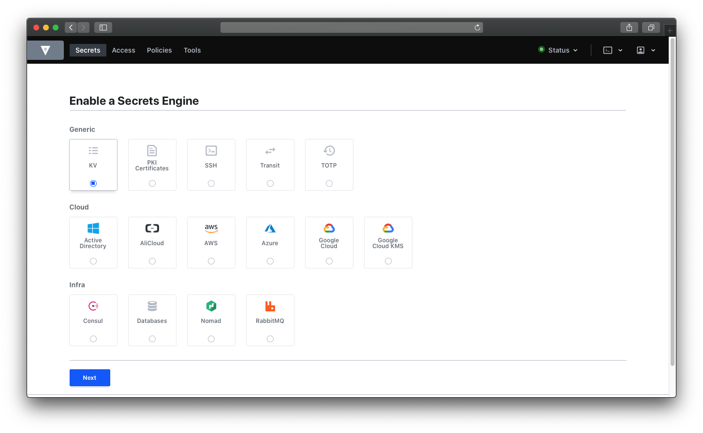
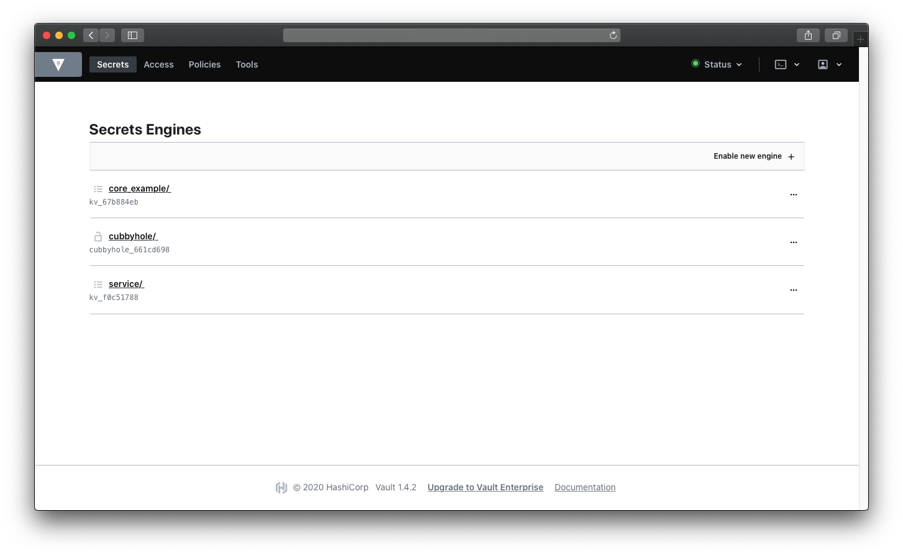
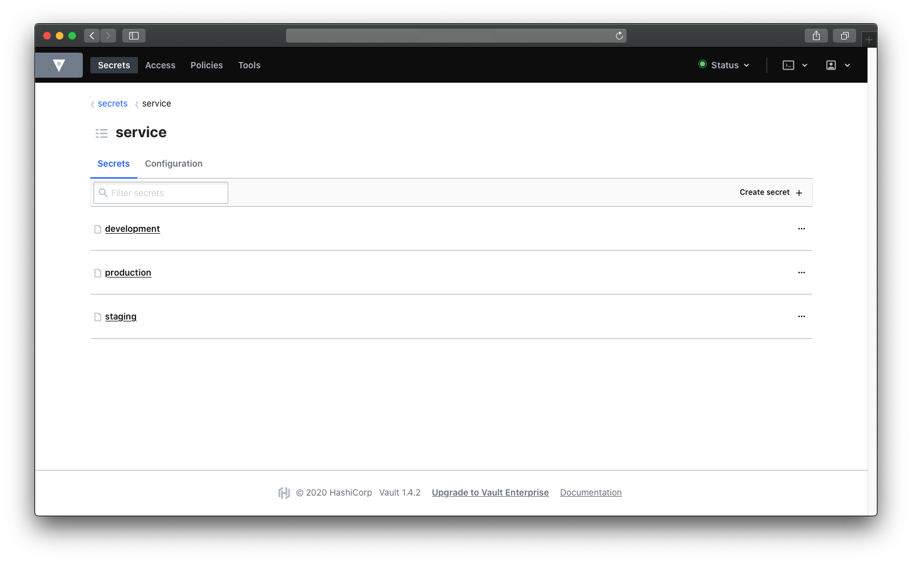
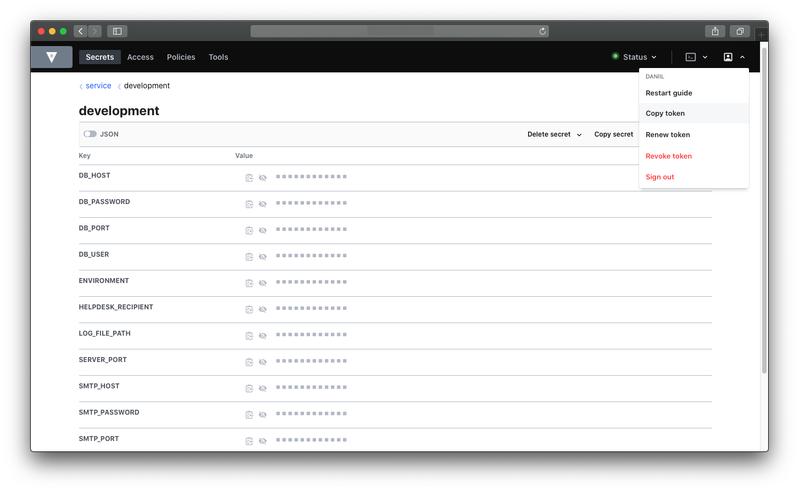

Hashicorp Vault as Environment Manager

How to use Hashicorp Vault as dot environment manager?
I decided to share this because I was looking for small, simple and easy to use tool where I would store dotenv secrets for my apps. And I found this nice and elegant solution which will allow you to control your application secrets with small bash script. üôÇ
Pre Requirements
- Installed vault
- Finish setup instructions
You can find nicely described steps here: Getting started
#1 Let’s add KV engine

In my case I will name it service. After you added your Key Value engine, you should see something like this:

#2 Add secrets (json files)
In my case I created development, staging and production. This files will store actual key value pairs, which in our case dot environment pairs.

#3 Add key value pairs
Fill your secrets (json files) with your secrets.
db_host localhost for example

#4 Pull key value
First of all you need token. In the right corner you will see profile icon and copy token button when you toggle the first one.

In my project I added this make file:
# Makefile
CFLAGS=-g
export CFLAGS
dev:
@./bin/getenv.sh development
staging:
@./bin/getenv.sh staging
production:
@./bin/getenv.sh production
And in bin folder I have getenv.sh file:
#!/bin/bash
secretsJSON=$(curl --request GET \
--url https://VAULT.YOURDOMAIN.COM/v1/service/"$1" \
--header "x-vault-token: ${VAULT_TOKEN}")
# shellcheck disable=SC2217
jq -r '.data | keys[] as $k | "\($k)=\"\(.[$k])\""' <<< "${secretsJSON}" | tr -d '"' > .env
Do not forget to export your copied token! export VAULT_TOKEN=<TOKEN_GOES_HERE>
Not sure if it useful to anyone, but i decided to share it here. Picture from instana.com